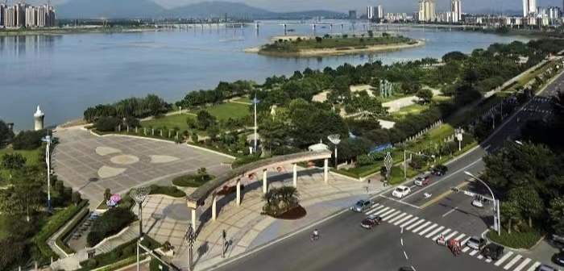

市情
来源：市文化和旅游局

清远市，广东省辖地级市，位于广东省的中北部、北江中下游、南岭山脉南侧与珠江三角洲的结合带上
清远市是广州都市圈城市 ，早在新石器时代就有先民在这片土地繁衍生息，创造出灿烂的史前文明
清远，又称“凤城”，广东省地级市，位于广东省中北部，东倚韶关，南邻广州、佛山，西靠肇庆，北接湘、桂。辖清城区、清新区、佛冈县、连山壮族瑶族自治县、连南瑶族自治县、阳山县，代管英德、连州2县级市。[1]截至2021年末，全市常住人口398.28万人，[2]土地总面积1.9万平方千米[3]，2021年全年全区生产总值为2007.45亿元
——建制沿革。 1988年，广东省英红华侨茶场由省下放到清远市，归市农委主管；1994年，经市委、市政府批准，设立英红综合经济区，赋予县级行政、经济管理职能，同时保留“广东省英红华侨茶场”的牌子；1999年3月，更名为清远市英红华侨管理区；2002年11月，经省政府批准撤销英红区，设立英红镇，划归英德市管辖。 为妥善安置飞来峡水利枢纽工程的移民，促进库区的经济繁荣与长治久安，1995年9月，经省委、省政府批准，设立飞来峡管理区，作为市政府的派出机构，管辖清新县的升平，英德市的黎溪、连江口、水边等4个镇。
——行政区划。 区划概况 截至2021年，清远市下辖2个市辖区、2个县、2个自治县、2个县级市。 区划详情 2个市辖区：清城区、清新区。 2个县：佛冈县、阳山县。 2个自治县：连山壮族瑶族自治县、连南瑶族自治县。 2个县级市：英德市、连州市
——自然环境。 独特的地理位置、奇特的地形地貌，孕育出个性鲜明的高山峡谷、河流湖泊、原始森林、溶洞温泉等奇特景观。属东亚亚热带季风气候区，年平均气温20.7℃，最低气温为1月份，最高气温为7月份，年平均日照1662.2小时，年平均降雨量1900毫米，每年无霜期平均为314.4天。
——自然资源。 全市有耕地面积28.9万公顷，林地面积118.8万公顷，园地面积3.0万公顷，水域面积6.4万公顷，未利用土地26.6万公顷；是广东省的主要矿产市之一，已发现有60种矿产，已探明储量的有44种，工业储量10亿吨以上。其中金、铜、铁、铭、锌、猛、煤和硫铁矿储量较大，稀土、瓷土、石墨、滑石、莹石、大理石、花岗岩、汉白玉、水泥灰岩、石英石、重晶石等十分丰富，优质瓷土储量6500万吨，优质石灰岩储量6.37亿吨；水力资源丰富，可供开发利用87.62万千瓦，至2003年底，已开发建设小水电装机容量62万千瓦。
——旅游资源。 清远以山地丘陵为主，大龙山、瑶山、云开大山与北江、连江、滃江、潖江在这里交汇，从而孕育出雄奇险陵的高山峡谷，松涛如海的原始森林、纯如深闺的湖泊温泉，以及豪放古朴的瑶、壮民族风情。飞霞风景名胜区、广东第一峰、清新温矿泉、宝晶宫、英西峰林、连州地下河、湟川三峡、三排瑶寨、大旭山瀑布群、新兴的以“唐风禅韵”为主体的御金街少林禅院和凤凰台等等。清远漂流、四驱越野车节是塑造“山水清远，活力之乡”旅游整体形象。清远旅游发展着力打造清新生态、飞霞风景名胜、英西奇特峰林、英佛湖光山色、连阳民族风情等“五条热线”和温泉休闲、漂流感受、山水风光、溶洞奇观、民族风情等“五大品牌”。 连州地下河 连州地下河位于连州市区以北25公里的东陂填。它藏在山势雄竣的大口岩溶洞中， 分三层游览面积达5.3万平方米，天然的洞口宽敝雄伟，置身其中，一种“别有洞天”的感觉油然而生。 2011年9月6日，连州地下河正式成为国家5A级景区。而且成为现有的广东仅有的9个5A级景区之一。
——已成为多元文化的展示中心。 清远市的语言有粤语（广府片-清远话）、客家语、瑶语、壮语四大语言。 粤语清远话主要分布在清城区、清新区、连州市及阳山县、佛冈县部分，属于粤语广府片。由于地缘关系，跟粤语广州话较为相似[41]，使用人口约占清远人口70%。[42] 清远客家语分属粤台片-梅惠小片（清城区）/龙华小片（除清城区和阳山县外的其他地区）和粤北片（阳山县）两大片，主要分布在英德市、佛冈县、阳山县以及清新区、清城区、连州市、连山县、连南县部分。 瑶语主要分布在连南县的三排、南岗、大坪、金坑、盘石等乡镇以及连山县西部的三水乡和大旭山林场，人口约有9.7万人。 壮语主要分布在连山县南部的永丰、福堂、上帅、加田、小三江等乡镇以及太保镇上坪管理区，人口约6.48万人。[43] 地方特产 清城区特产：清远鸡、乌鬃鹅。 特色小吃：猪肚鸡、白切清远鸡、吊烧清远鸡、母鹅煲、母鸡煲、刀切糍、艾糍、洲心烧肉、洲心大粥。 清新特产：骆坑笋、蒲坑茶、鸡心黄皮、砂糖桔。
 @qq.com
@qq.com